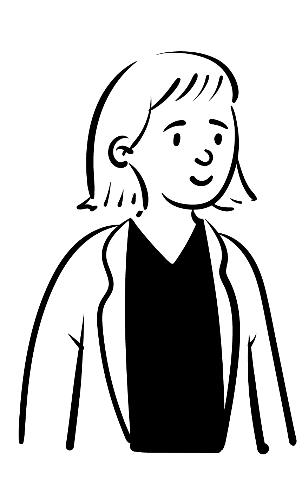
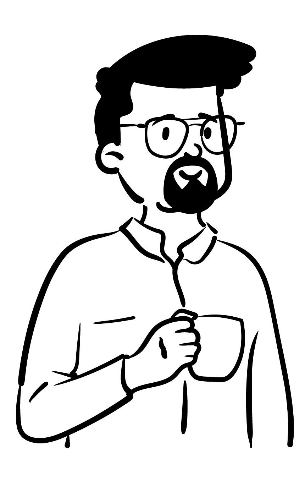
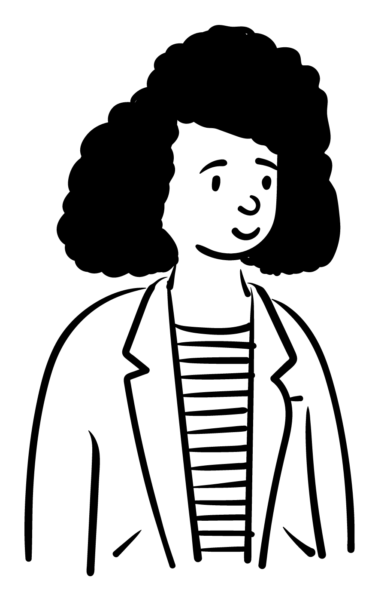

Problems
Intranet can be a powerful tool for knowledge management, but sometimes, People Just Don't Use It
My team worked with an academic institute at the University of Michigan to evaluate its intranet system. Our goal is to find out why the usage rate remains low and provide recommendations.
Client Meeting
Meet with the client, Scope the project, and Understand the problems
We met with the manager of the Intranet and asked her about the systems and users. In the meeting, we found out the main issues the institute facing are that:
Users are...
- Not familiar with the available information
- Having trouble looking for information on the site
- Lack of engagement in terms of visitation
Research - Literature Review
Search for the Factors Influence the Usability of the Intranet
- Importance and relevance of the intranet to users’ jobs
- Reliability and user-friendliness
- Levels of web awareness and value additionality.
- Technical support
- Culture of information sharing
Research - Contextual Inquiry
Conducted six interviews with 3 Kinds of Users
Administrative team
Manage the Intranet
Upload information
IT staffs
Maintain the Intranet
Scientists
Search for information
Upload information
During the interview, they were asked to demonstrate or talk about the following topics/moves:
- Their working environment and working process
- When do they use Intranet, how they use it, and their experience using it
- How they retrieve information
Research - Affinity Diagram
Used the Affinity Diagram to find the patterns of the information

For better efficiency, We worked together and created a physical affinity wall.
In this session, we grouped the affinity notes into 5 categories, including:
Intended Audience & Social Feed
What users expect to the Intranet & What do they know about it.
Experience toward the Intranet
What do users think about the Intranet & Their experiences using it.
Usability of Content
What do users think about the content provided on the Intranet.
Editing
How the information is edited.
Alternatives
In what way users get the information they need that is also on the Intranet.
Findings
What's good
Quick links and administrative content are useful
What's bad
The bad structure and visual design are why people don't use it
Information is outdated, and the content is too administrative-focused
Expectation to Intranet
To store information
A platform to interact on
Alternatives
"I send an e-mail or make a phone call to ask a question."
The Actual Problem
Users do not use/need the system
The content on the Intranet is administrative-focused, and the researchers already have their own ways to get help or find information.
Recommendations
Cease the Operation
During the interview, we found out that the IT department does not have enough staff to maintain the system. Also, researchers do not have enough time to update everything on the Intranet.
The current usage is mainly by the users assigned to upload information. However, people don't look for information on it; Instead, they only use the quick links to find other pages.
The Intranet is hosted by an outside provider, and it costs. Based on the inactivity and lack of engagement with the Intranet, there is not sufficient reason to continue the operation of the site.
If they want to keep it
- More discussion between the administrative team, IT, and researchers on Expectation to the intranet, Divide the maintaining workload.
- Survey the researchers for the features or the information they would like to have on the Intranet.
- The interface and the structure should be simplified for the non-administrators to understand.
Teammates
Jack Lyons, Maricela Avalos, Ming-Hsuan Tao
Role in Project
UX Researcher
Research
Contextual Inquiery | Affinities Diagram | Literature Review
Duration
3 months (Oct. - Dec. 2019)